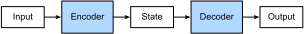

%load_ext d2lbook.tab
tab.interact_select('mxnet', 'pytorch', 'tensorflow', 'jax')L’architecture encodeur-décodeur
Dans les problèmes généraux de séquence à séquence comme la traduction automatique (sec_machine_translation), les entrées et les sorties sont de longueurs variables et ne sont pas alignées. L’approche standard pour traiter ce type de données consiste à concevoir une architecture encodeur-décodeur (fig_encoder_decoder) composée de deux éléments majeurs : un encodeur qui prend une séquence de longueur variable en entrée, et un décodeur qui agit comme un modèle de langage conditionnel, prenant l’entrée encodée et le contexte de gauche de la séquence cible pour prédire le jeton suivant dans la séquence cible.

Prenons l’exemple de la traduction automatique de l’anglais vers le français. Étant donné une séquence d’entrée en anglais : « They », « are », « watching », « . », cette architecture encodeur-décodeur encode d’abord l’entrée de longueur variable dans un état, puis décode cet état pour générer la séquence traduite, jeton par jeton, en sortie : « Ils », « regardent », « . ». Comme l’architecture encodeur-décodeur constitue la base de différents modèles de séquence à séquence dans les sections suivantes, cette section convertira cette architecture en une interface qui sera implémentée plus tard.%%tab mxnet
from d2l import mxnet as d2l
from mxnet.gluon import nn%%tab pytorch
from d2l import torch as d2l
from torch import nn%%tab tensorflow
from d2l import tensorflow as d2l
import tensorflow as tf%%tab jax
from d2l import jax as d2l
from flax import linen as nn(Encodeur)
Dans l’interface de l’encodeur, nous précisons simplement que
l’encodeur prend des séquences de longueur variable comme entrée
X. L’implémentation sera fournie par tout modèle qui hérite
de cette classe de base Encoder.
%%tab mxnet
class Encoder(nn.Block): #@save
"""The base encoder interface for the encoder--decoder architecture."""
def __init__(self):
super().__init__()
# Later there can be additional arguments (e.g., length excluding padding)
def forward(self, X, *args):
raise NotImplementedError%%tab pytorch
class Encoder(nn.Module): #@save
"""The base encoder interface for the encoder--decoder architecture."""
def __init__(self):
super().__init__()
# Later there can be additional arguments (e.g., length excluding padding)
def forward(self, X, *args):
raise NotImplementedError%%tab tensorflow
class Encoder(tf.keras.layers.Layer): #@save
"""The base encoder interface for the encoder--decoder architecture."""
def __init__(self):
super().__init__()
# Later there can be additional arguments (e.g., length excluding padding)
def call(self, X, *args):
raise NotImplementedError%%tab jax
class Encoder(nn.Module): #@save
"""The base encoder interface for the encoder--decoder architecture."""
def setup(self):
raise NotImplementedError
# Later there can be additional arguments (e.g., length excluding padding)
def __call__(self, X, *args):
raise NotImplementedErrorDécodeur
Dans l’interface du décodeur suivante, nous ajoutons une méthode
supplémentaire init_state pour convertir la sortie de
l’encodeur (enc_all_outputs) en l’état encodé. Notez que
cette étape peut nécessiter des entrées supplémentaires, telles que la
longueur valide de l’entrée, qui a été expliquée dans la
sec_machine_translation. Pour générer une séquence de longueur variable
jeton par jeton, le décodeur peut mapper à chaque fois une entrée (par
exemple, le jeton généré à l’étape temporelle précédente) et l’état
encodé en un jeton de sortie à l’étape temporelle actuelle.
%%tab mxnet
class Decoder(nn.Block): #@save
"""The base decoder interface for the encoder--decoder architecture."""
def __init__(self):
super().__init__()
# Later there can be additional arguments (e.g., length excluding padding)
def init_state(self, enc_all_outputs, *args):
raise NotImplementedError
def forward(self, X, state):
raise NotImplementedError%%tab pytorch
class Decoder(nn.Module): #@save
"""The base decoder interface for the encoder--decoder architecture."""
def __init__(self):
super().__init__()
# Later there can be additional arguments (e.g., length excluding padding)
def init_state(self, enc_all_outputs, *args):
raise NotImplementedError
def forward(self, X, state):
raise NotImplementedError%%tab tensorflow
class Decoder(tf.keras.layers.Layer): #@save
"""The base decoder interface for the encoder--decoder architecture."""
def __init__(self):
super().__init__()
# Later there can be additional arguments (e.g., length excluding padding)
def init_state(self, enc_all_outputs, *args):
raise NotImplementedError
def call(self, X, state):
raise NotImplementedError%%tab jax
class Decoder(nn.Module): #@save
"""The base decoder interface for the encoder--decoder architecture."""
def setup(self):
raise NotImplementedError
# Later there can be additional arguments (e.g., length excluding padding)
def init_state(self, enc_all_outputs, *args):
raise NotImplementedError
def __call__(self, X, state):
raise NotImplementedErrorAssembler l’encodeur et le décodeur
Dans la propagation avant, la sortie de l’encodeur est utilisée pour produire l’état encodé, et cet état sera ensuite utilisé par le décodeur comme l’une de ses entrées.
%%tab mxnet, pytorch
class EncoderDecoder(d2l.Classifier): #@save
"""The base class for the encoder--decoder architecture."""
def __init__(self, encoder, decoder):
super().__init__()
self.encoder = encoder
self.decoder = decoder
def forward(self, enc_X, dec_X, *args):
enc_all_outputs = self.encoder(enc_X, *args)
dec_state = self.decoder.init_state(enc_all_outputs, *args)
# Return decoder output only
return self.decoder(dec_X, dec_state)[0]%%tab tensorflow
class EncoderDecoder(d2l.Classifier): #@save
"""The base class for the encoder--decoder architecture."""
def __init__(self, encoder, decoder):
super().__init__()
self.encoder = encoder
self.decoder = decoder
def call(self, enc_X, dec_X, *args):
enc_all_outputs = self.encoder(enc_X, *args, training=True)
dec_state = self.decoder.init_state(enc_all_outputs, *args)
# Return decoder output only
return self.decoder(dec_X, dec_state, training=True)[0]%%tab jax
class EncoderDecoder(d2l.Classifier): #@save
"""The base class for the encoder--decoder architecture."""
encoder: nn.Module
decoder: nn.Module
training: bool
def __call__(self, enc_X, dec_X, *args):
enc_all_outputs = self.encoder(enc_X, *args, training=self.training)
dec_state = self.decoder.init_state(enc_all_outputs, *args)
# Return decoder output only
return self.decoder(dec_X, dec_state, training=self.training)[0]Dans la section suivante, nous verrons comment appliquer les RNN pour concevoir des modèles de séquence à séquence basés sur cette architecture encodeur-décodeur.
Résumé
Les architectures encodeur-décodeur peuvent gérer des entrées et des sorties composées toutes deux de séquences de longueur variable et sont donc adaptées aux problèmes de séquence à séquence tels que la traduction automatique. L’encodeur prend une séquence de longueur variable en entrée et la transforme en un état de forme fixe. Le décodeur mappe l’état encodé de forme fixe vers une séquence de longueur variable.
Exercices
- Supposons que nous utilisions des réseaux de neurones pour implémenter l’architecture encodeur-décodeur. L’encodeur et le décodeur doivent-ils être du même type de réseau de neurones ?
- Outre la traduction automatique, pouvez-vous penser à une autre application où l’architecture encodeur-décodeur peut être appliquée ?
:begin_tab:mxnet Discussions :end_tab:
:begin_tab:pytorch Discussions :end_tab:
:begin_tab:tensorflow Discussions :end_tab:
:begin_tab:jax Discussions :end_tab: